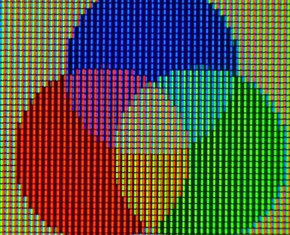
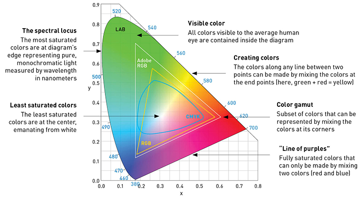
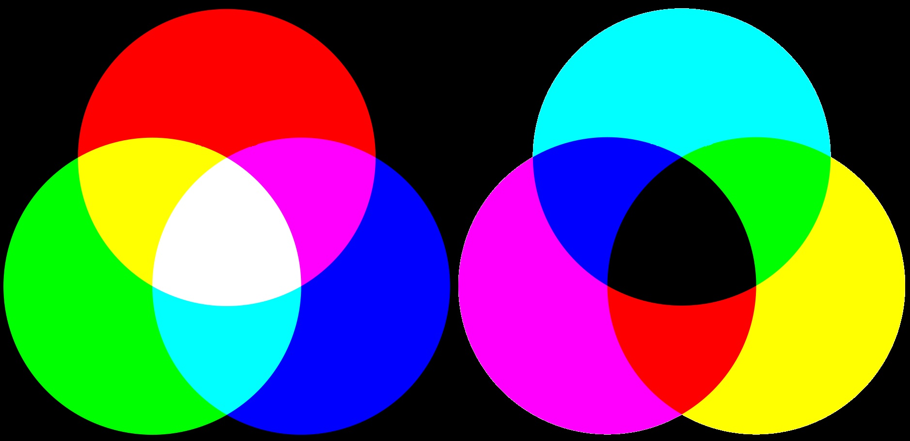
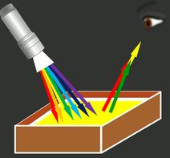

In kindergarten art class, they show us a color wheel like this. They say that the colors that will contrast each other the strongest are across from each other, opposites:
The color sensing cones in our eyes come in 3 sensitivities, each specializing in detecting a different range of light frequencies.
The peak sensitivities of these are red, green, and blue.
Note: While I had biases in the images I chose for this page, the fact that for the example below, there was so much variation
of whether cyan was included and just how the curves lined up, that many of them must be inaccurately aligned, not quite showing
the exact tone of light corresponding to the given frequency.
When we see 2 frequencies of light together, our brain processes them as the average of the 2. This is how pixels on screens work. So while there is no single frequency of purple light, our minds assign mixed blue and red light a color, like it assigns a color to any other frequency or combination of frequencies. From these you can see that again the colors have been arranged circularly again, but are the ones across from each other "opposite?"
 White light is how our brains interpret the average of all 3 frequencies together. When we overlap the colors like a venn diagram, you can see that the combinations equal a lack of the color across from them.
So lets assume that the primary colors we use for light correspond to the colors each cone detects, and that is why they are primary. When objects are reflecting light and not generating it, the color they appear is the frequencies it does not absorb. This means the primary colors are inverse to light. If an object appears yellow (red and green) under white (red green blue) light, then if you shine it with cyan (green and blue) light, it absorbs blue light to only reflect green. This means that objects or pigments, which have a color in white light, will in some color of light reflect no color, appearing black.
 This video breaks down how our eyes and brains process color in a more visual way.